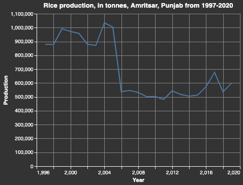
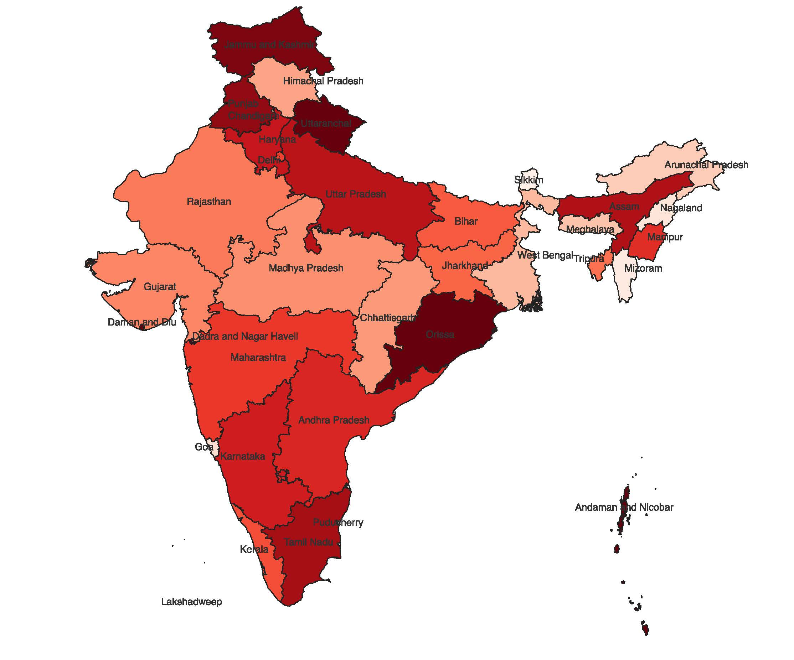

DATA JOURNALISM PORTFOLIO  Analysing agricultural production in Indian states Seeing the crop production trends in various states of India, especially Punjab, over the years, using Python, Altair and Matplotlib. This was done for a UC Berkeley school project.  Protest activity in Jammu & Kashmir, India Analyzing protest activity in India over the years, using Google sheets, Datawrapper and Infogram. This was done for a UC Berkeley school project.